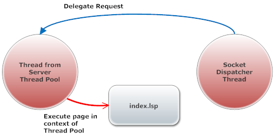

The Lua blocking firmware upload example cannot be used by a single threaded server since the upload logic in index.lsp blocks the executing thread until the upload is completed and the zip file is unpacked. This example is much easier than the non blocking example since we can do all the work in index.lsp.
When the browser uploads the zip file to the server, the Barracuda Socket Dispatcher triggers and sends the event to the Barracuda Server. The server parses the request and delegates the request to a thread in the Barracuda Thread Pool. The thread in the Thread Pool executes the index.lsp page. The server can manage concurrent requests as long as the server has threads available in the thread pool.
Files:
External resources used by this example: